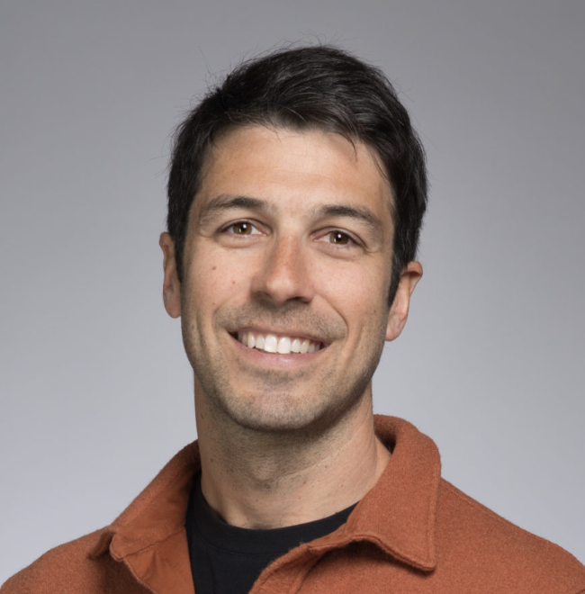

Linux Foundation, COSSA and Serena Report Shows Venture Investment in Open Source Outperforms Proprietary Counterparts and Benefits CommunitiesAugust 2025
Insights on how tech companies are building value with open-source software.April 2024
Bio & Contact

Matt Lavergne
Matt Lavergne is a Partner at Serena, where he leads investments in infrastructure software, AI, and open source. He focuses on backing early-stage founders in Europe and the US building products for technical leaders such as CTOs, CIOs, CISOs, and developers.